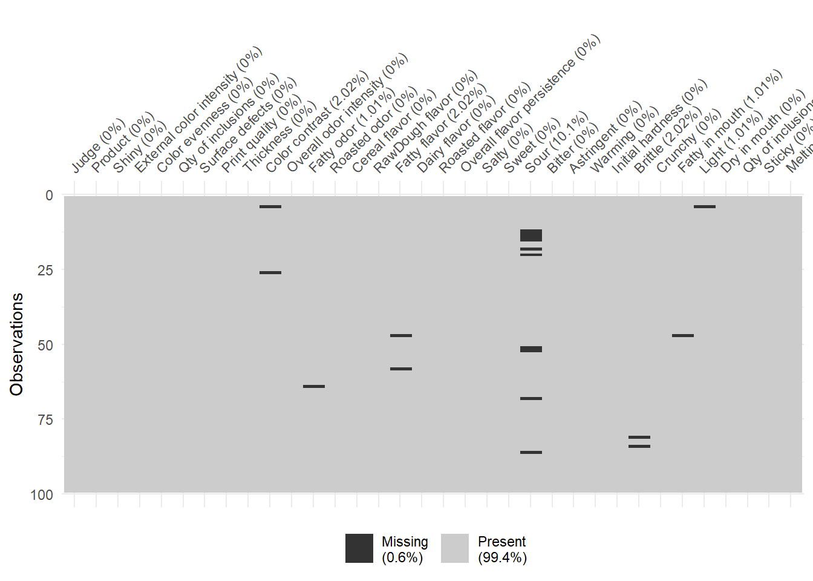
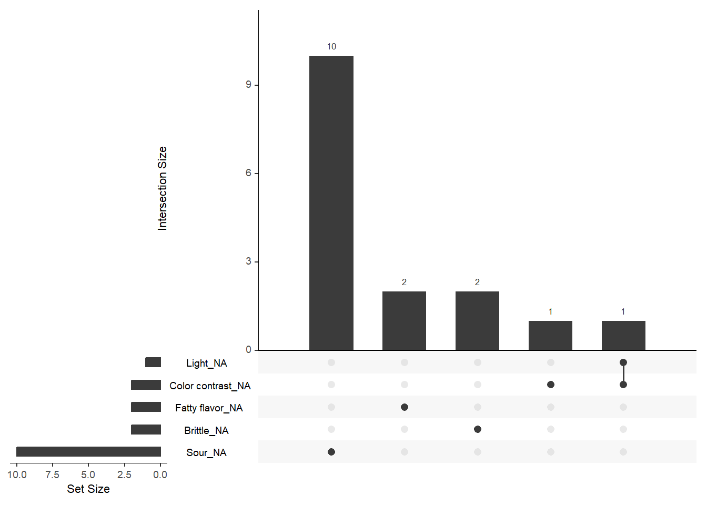
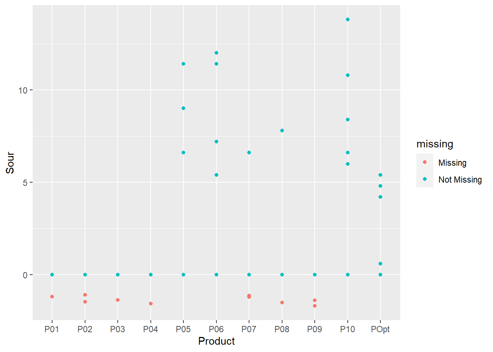

Chapter 9 Data Preparation
After importing the data, the next crucial step is to ensure that the data as it is now available is of good quality and is the correct representation of reality. As an example, during importation, software (such as R) tends to guess (from reading the file) the nature of each variable. If such guess is correct in 99% of the case, there are situations in which it is erroneous, and ignoring such error can have huge consequences on the final results and conclusions. The goal of this section is hence to perform some pre-check of the data and to prepare them for future analyses.
9.1 Introduction
Data Preparation, which consists of data inspection and data cleaning, is a critical step before any further Data Manipulation or Data Analysis. Having a good data preparation procedure ensures a good understanding of the data, and avoids what could be very critical mistakes.
To illustrate the importance of the later point, let’s imagine a study in which the samples are defined by their 3-digits code. During importation, R would recognize them as number, and hence defines the Product column as numerical. Without inspection and correction, any ANOVA that include the product effect would be replaced by a linear regression (or analysis of covariance) which of course does not provide the results required (although the analysis would run without error). Worst, if this procedure is automated and the p-value associated to the product effect is extracted, the conclusions would rely on the wrong analysis! A good data preparation procedure is hence important to avoid such unexpected results.
So what consists of data preparation, and how does that differ from data manipulation? There is clearly a thin line between data preparation (and particularly data cleaning) and data manipulation, as both these steps share many procedures in common (same applies to data manipulation and data analysis for instance). Although multiple definitions of each step exist, we decided to follow the following rule:
Data Preparation includes all the required steps to ensure that the data is matching its intrinsic nature. These steps include inspecting the data at hand (usually through simple descriptive statistics of the data as a whole) and cleaning the data by eventually correcting importation errors (including the imputation of missing data). Although some descriptive statistics are being produced for data inspection, these analyses have no interpretation value besides ensuring that the data are in the right range, or following the right distribution. For instance, with our sensory data, we would ensure that all our sensory scores are included between 0 and 100 (negative scores would not be permitted), but we would not look at the mean or the distribution of the score per product which would belong to data analyses as it would often lead to interpretation (e.g. P01 is sweeter than P02).
The Data Manipulation is an optional step that adjust or convert the data into a structure that is usable for further analysis. This of course may lead to interpretation of the results as it may involve some analyses.
The Data Analysis step ultimately converts the data into results (through values, graphics, tables, etc.) that provide more insights (through interpretation) about the data.
The data used in this chapter corresponds to the biscuits_sensory_profile.xlsx that you already imported in Section 8 but with few missing values. This new data set is stored in biscuits_sensory_profile_with_NA.xlsx.
As usual, we start this chapter by loading the main packages we need and by importing this data set:
library(tidyverse)
library(readxl)
library(here)
file_path <- here("data","biscuits_sensory_profile_with_NA.xlsx")
sensory <- read_xlsx(file_path, sheet="Data")9.2 Inspect
9.2.1 Data Inspection
To inspect the data, different steps can be used.
First, since read_xlsx() returns a tibble, let’s take advantage of its printing properties to get a fill of the data:
sensory## # A tibble: 99 × 34
## Judge Product Shiny Extern…¹ Color…² Qty o…³ Surfa…⁴
## <chr> <chr> <dbl> <dbl> <dbl> <dbl> <dbl>
## 1 J01 P01 52.8 30 22.8 9.6 22.8
## 2 J01 P02 48.6 30 13.2 10.8 13.2
## 3 J01 P03 48 45.6 17.4 7.8 14.4
## 4 J01 P04 46.2 45.6 37.8 0 48.6
## 5 J01 P05 0 23.4 49.2 0 12.6
## 6 J01 P06 0 50.4 24 27.6 39.6
## 7 J01 P07 5.4 6.6 17.4 0 36
## 8 J01 P08 0 51.6 48.6 23.4 18
## 9 J01 P09 0 42.6 18 21 36
## 10 J01 P10 53.4 36.6 11.4 18 10.8
## # … with 89 more rows, 27 more variables:
## # `Print quality` <dbl>, Thickness <dbl>,
## # `Color contrast` <dbl>,
## # `Overall odor intensity` <dbl>,
## # `Fatty odor` <dbl>, `Roasted odor` <dbl>,
## # `Cereal flavor` <dbl>, `RawDough flavor` <dbl>,
## # `Fatty flavor` <dbl>, `Dairy flavor` <dbl>, …Other informative solutions consists in printing a summary of the data through the summary() or glimpse():
summary(sensory)## Judge Product Shiny
## Length:99 Length:99 Min. : 0.0
## Class :character Class :character 1st Qu.: 9.3
## Mode :character Mode :character Median :21.0
## Mean :23.9
## 3rd Qu.:38.4
## Max. :54.0
##
## External color intensity Color evenness
## Min. : 6.6 Min. : 6.6
## 1st Qu.:27.0 1st Qu.:19.5
## Median :34.8 Median :26.4
## Mean :33.7 Mean :28.2
## 3rd Qu.:42.6 3rd Qu.:37.2
## Max. :55.2 Max. :53.4
##
## Qty of inclusions Surface defects Print quality
## Min. : 0.0 Min. : 4.8 Min. :12.0
## 1st Qu.:13.8 1st Qu.:15.3 1st Qu.:36.3
## Median :19.8 Median :21.0 Median :40.8
## Mean :20.6 Mean :23.4 Mean :40.7
## 3rd Qu.:29.1 3rd Qu.:30.6 3rd Qu.:47.1
## Max. :40.8 Max. :51.6 Max. :60.0
##
## Thickness Color contrast Overall odor intensity
## Min. : 7.8 Min. : 5.4 Min. : 0.0
## 1st Qu.:18.3 1st Qu.:21.0 1st Qu.:10.2
## Median :25.8 Median :32.4 Median :18.0
## Mean :25.5 Mean :29.7 Mean :18.7
## 3rd Qu.:32.1 3rd Qu.:40.2 3rd Qu.:26.1
## Max. :52.8 Max. :51.6 Max. :40.2
## NA's :2
## Fatty odor Roasted odor Cereal flavor
## Min. : 0.00 Min. : 0.0 Min. : 0.0
## 1st Qu.: 0.00 1st Qu.: 8.1 1st Qu.:18.0
## Median : 5.40 Median :15.0 Median :25.2
## Mean : 6.85 Mean :15.1 Mean :25.0
## 3rd Qu.:10.65 3rd Qu.:20.7 3rd Qu.:31.2
## Max. :27.00 Max. :42.0 Max. :48.0
## NA's :1
## RawDough flavor Fatty flavor Dairy flavor
## Min. : 0.0 Min. : 0.00 Min. : 0.00
## 1st Qu.: 3.0 1st Qu.: 0.00 1st Qu.: 0.00
## Median :13.2 Median : 6.60 Median : 7.20
## Mean :14.2 Mean : 7.53 Mean : 9.11
## 3rd Qu.:24.6 3rd Qu.:13.80 3rd Qu.:13.50
## Max. :43.2 Max. :24.00 Max. :46.80
## NA's :2
## Roasted flavor Overall flavor persistence
## Min. : 0.0 Min. : 0.0
## 1st Qu.: 9.0 1st Qu.:16.2
## Median :17.4 Median :22.8
## Mean :17.7 Mean :22.7
## 3rd Qu.:24.6 3rd Qu.:28.8
## Max. :51.6 Max. :43.8
##
## Salty Sweet Sour
## Min. : 0.00 Min. : 0.0 Min. : 0.0
## 1st Qu.: 0.00 1st Qu.: 9.9 1st Qu.: 0.0
## Median : 1.20 Median :18.0 Median : 0.0
## Mean : 5.03 Mean :17.8 Mean : 1.6
## 3rd Qu.:10.05 3rd Qu.:24.3 3rd Qu.: 0.0
## Max. :19.20 Max. :43.2 Max. :13.8
## NA's :10
## Bitter Astringent Warming
## Min. : 0.0 Min. : 0.0 Min. : 0.0
## 1st Qu.: 0.0 1st Qu.: 0.0 1st Qu.: 9.3
## Median : 7.8 Median : 8.4 Median :16.8
## Mean : 8.1 Mean :11.4 Mean :16.8
## 3rd Qu.:14.1 3rd Qu.:19.5 3rd Qu.:25.2
## Max. :27.6 Max. :34.2 Max. :47.4
##
## Initial hardness Brittle Crunchy
## Min. : 0.0 Min. : 0.0 Min. : 8.4
## 1st Qu.:19.5 1st Qu.:27.6 1st Qu.:23.2
## Median :30.6 Median :34.8 Median :30.6
## Mean :30.1 Mean :31.6 Mean :29.6
## 3rd Qu.:39.3 3rd Qu.:39.0 3rd Qu.:36.3
## Max. :60.0 Max. :57.0 Max. :48.6
## NA's :2
## Fatty in mouth Light Dry in mouth
## Min. : 0.00 Min. : 5.4 Min. :11.4
## 1st Qu.: 0.00 1st Qu.:22.8 1st Qu.:39.0
## Median : 5.70 Median :31.2 Median :45.0
## Mean : 7.36 Mean :30.1 Mean :43.0
## 3rd Qu.:13.05 3rd Qu.:36.6 3rd Qu.:49.8
## Max. :27.00 Max. :53.4 Max. :58.8
## NA's :1 NA's :1
## Qty of inclusions in mouth Sticky
## Min. : 0.0 Min. : 6.0
## 1st Qu.:15.9 1st Qu.:27.0
## Median :26.4 Median :33.6
## Mean :24.9 Mean :32.7
## 3rd Qu.:35.4 3rd Qu.:39.6
## Max. :45.6 Max. :52.8
##
## Melting
## Min. : 0.0
## 1st Qu.:13.2
## Median :19.2
## Mean :20.5
## 3rd Qu.:27.3
## Max. :38.4
## glimpse(sensory)## Rows: 99
## Columns: 34
## $ Judge <chr> "J01", "J01", "J…
## $ Product <chr> "P01", "P02", "P…
## $ Shiny <dbl> 52.8, 48.6, 48.0…
## $ `External color intensity` <dbl> 30.0, 30.0, 45.6…
## $ `Color evenness` <dbl> 22.8, 13.2, 17.4…
## $ `Qty of inclusions` <dbl> 9.6, 10.8, 7.8, …
## $ `Surface defects` <dbl> 22.8, 13.2, 14.4…
## $ `Print quality` <dbl> 48.6, 54.0, 49.2…
## $ Thickness <dbl> 38.4, 35.4, 25.8…
## $ `Color contrast` <dbl> 37.8, 40.2, 17.4…
## $ `Overall odor intensity` <dbl> 16.8, 24.6, 21.6…
## $ `Fatty odor` <dbl> 6.6, 5.4, 0.0, 0…
## $ `Roasted odor` <dbl> 15.6, 20.4, 18.6…
## $ `Cereal flavor` <dbl> 24.6, 25.8, 30.0…
## $ `RawDough flavor` <dbl> 28.2, 28.8, 26.4…
## $ `Fatty flavor` <dbl> 13.8, 7.2, 0.0, …
## $ `Dairy flavor` <dbl> 0.0, 0.0, 0.0, 0…
## $ `Roasted flavor` <dbl> 24.6, 19.2, 27.0…
## $ `Overall flavor persistence` <dbl> 23.4, 24.6, 25.2…
## $ Salty <dbl> 0.0, 0.0, 0.0, 0…
## $ Sweet <dbl> 13.8, 19.2, 9.6,…
## $ Sour <dbl> 0.0, 0.0, 0.0, 0…
## $ Bitter <dbl> 19.2, 21.6, 21.0…
## $ Astringent <dbl> 0.0, 0.0, 25.8, …
## $ Warming <dbl> 0.0, 0.0, 13.8, …
## $ `Initial hardness` <dbl> 11.4, 17.4, 33.0…
## $ Brittle <dbl> 39.6, 35.4, 27.6…
## $ Crunchy <dbl> 25.8, 32.4, 25.2…
## $ `Fatty in mouth` <dbl> 0.0, 9.6, 6.0, 9…
## $ Light <dbl> 22.8, 21.0, 20.4…
## $ `Dry in mouth` <dbl> 27.0, 25.8, 31.2…
## $ `Qty of inclusions in mouth` <dbl> 27.6, 22.2, 10.2…
## $ Sticky <dbl> 37.2, 35.4, 37.2…
## $ Melting <dbl> 33.6, 36.0, 8.4,…These functions provide relevant yet basic views of each variable present in the data including their types, the range of values, means, and medians, as well as the first values of each variables.
Such view might be sufficient for some first conclusions (e.g. Are my panelists considered as numerical or nominal data? Do I have missing values?), yet it is not sufficient to fully ensure that the data is ready for analysis. For the latter, more extensive analyses can be performed automatically in different ways. These analyses include looking at the distribution of some variables, or the frequencies of character levels.
A first solution comes from the {skimr} package and its skim() function. By applying it to data, an automated extended summary is directly printed on screen by separating character type variables from numeric type variables:
library(skimr)
skim(sensory)Another approach consists in generating automatically an html report with some pre-defined analyses using create_report() from the {DataExplorer} package.
library(DataExplorer)
create_report(sensory)Unless specified otherwise through output_file, output_dir, and output_format, the report will be saved as an html file on your active directory as report.html. This report provides many statistics on your data, including some simple statistics (e.g. raw counts, percentages), informs you on the structure of your data, as well as on eventual missing data. It also generates graphics to describe your variables (e.g. univariate distribution, correlation and PCA).
Note that the analyses performed to build this report can be called directly within R. For instance,
introduce()andplot_intro()generates the first part of the report, whereasplot_missing()andprofile_missing()provide information regarding missing data just to name those.
9.2.2 Missing Data
In the previous section on 9.2.1, it can be seen that the data set contain missing values. It concerns for instance the attribute Light, for which one missing value has been detected. There are different ways in which we can handle such missing values. But first, let’s try to find out where these missing values are, and which impact they may have on our analyses (are they structured or unstructured, etc.)
9.2.2.1 Visualization of Missing Values
A first approach to inspect and visualize where the missing values are is by representing them visually. To do so, the {visdat} package provides a neat solution as it represents graphically the data by highlighting where missing values are located. Such visual representation is obtained using the vis_miss() function:
library(visdat)
sensory %>%
vis_miss()
As can be seen, missing values are only present in few variables. However, Sour contains up to 10% of missing data, which can be quite critical in some situations.
If we would want to dig deeper and assess for which products (say) data are missing, we could re-create the same plots per product. The following code would generate that for you:
sensory %>%
split(.$Product) %>%
map(function(data){
vis_miss(data)
})Of course, such approach could also be applied per panelist for instance.
Once we’ve investigated where the missing values are located, we can go further by understanding if there are some sorts of relationship between missing values. In other words, are the missing values random? Or are they somewhat structured?
To answer these questions, the {naniar} package provides an interesting function called gg_miss_upset() which studies the relationship between missing values:
library(naniar)
sensory %>%
gg_miss_upset()
It seems here that the only connection between NAs is observed between Light and Color contrast.
Such relational structure can also be visualized in a scatter plot using the geom_miss_point() function from the same package:
ggplot(sensory, aes(x=Product, y=Sour))+
geom_miss_point()
Here, the relationship between Product and Sour is shown. Such plot may help decide what to do with missing values, whether it is ignoring, removing, or predicting them.
9.2.2.2 Ignoring Missing Values
A first solution to handle missing values is to simply ignore them, as many analyses handle them well. For instance, an ANOVA could be run for such attribute, and results are being produced:
broom::tidy(aov(Light ~ Product + Judge, data=sensory))## # A tibble: 3 × 6
## term df sumsq meansq statistic p.value
## <chr> <dbl> <dbl> <dbl> <dbl> <dbl>
## 1 Product 10 2379. 238. 4.73 2.71e-5
## 2 Judge 8 4100. 513. 10.2 1.16e-9
## 3 Residuals 79 3975. 50.3 NA NAThis solution may work fine when the number of missing values is small, but be aware that it can also provide erroneous results in case they are not handled the way the analyst is expecting them to be handled.
For some other analyses, ignoring the presence of missing values may simply provide unwanted results. To illustrate this, let’s compute the simple mean per product for Light
sensory %>%
group_by(Product) %>%
summarise(Light = mean(Light)) %>%
ungroup()## # A tibble: 11 × 2
## Product Light
## <chr> <dbl>
## 1 P01 29.6
## 2 P02 30.9
## 3 P03 28.3
## 4 P04 NA
## 5 P05 32.1
## 6 P06 29.3
## 7 P07 24.5
## 8 P08 37.9
## 9 P09 22.7
## 10 P10 27.7
## 11 POpt 28.7As can be seen, since P04 contains the missing value, its corresponding mean is defined as NA.
9.2.2.3 Removing Missing Values
To enforce the mean to be computed, we need to inform R to remove any missing values beforehand. Such procedure can be done manually by simply filtering out any missing data (here for Sour) before running the analysis:
sensory %>%
filter(!is.na(Sour))## # A tibble: 89 × 34
## Judge Product Shiny Extern…¹ Color…² Qty o…³ Surfa…⁴
## <chr> <chr> <dbl> <dbl> <dbl> <dbl> <dbl>
## 1 J01 P01 52.8 30 22.8 9.6 22.8
## 2 J01 P02 48.6 30 13.2 10.8 13.2
## 3 J01 P03 48 45.6 17.4 7.8 14.4
## 4 J01 P04 46.2 45.6 37.8 0 48.6
## 5 J01 P05 0 23.4 49.2 0 12.6
## 6 J01 P06 0 50.4 24 27.6 39.6
## 7 J01 P07 5.4 6.6 17.4 0 36
## 8 J01 P08 0 51.6 48.6 23.4 18
## 9 J01 P09 0 42.6 18 21 36
## 10 J01 P10 53.4 36.6 11.4 18 10.8
## # … with 79 more rows, 27 more variables:
## # `Print quality` <dbl>, Thickness <dbl>,
## # `Color contrast` <dbl>,
## # `Overall odor intensity` <dbl>,
## # `Fatty odor` <dbl>, `Roasted odor` <dbl>,
## # `Cereal flavor` <dbl>, `RawDough flavor` <dbl>,
## # `Fatty flavor` <dbl>, `Dairy flavor` <dbl>, …However, this latter solution is not always satisfactory as it also deletes real data since the data set went from 99 to 89 rows. This means that for variables that did not have missing values for instance, existing data have been removed.
Hence, we prefer another alternative which consists in removing missing values within the analysis procedure (here mean()) through the parameter na.rm=TRUE:
sensory %>%
group_by(Product) %>%
summarise(Light = mean(Light, na.rm=TRUE)) %>%
ungroup()## # A tibble: 11 × 2
## Product Light
## <chr> <dbl>
## 1 P01 29.6
## 2 P02 30.9
## 3 P03 28.3
## 4 P04 40.7
## 5 P05 32.1
## 6 P06 29.3
## 7 P07 24.5
## 8 P08 37.9
## 9 P09 22.7
## 10 P10 27.7
## 11 POpt 28.7Using na.rm=TRUE is equivalent to removing the missing values from the data before performing the analysis, but only for the variable of interest. A similar approach consists in first rotating (using pivot_longer()) the data before removing missing values:
sensory %>%
pivot_longer(Shiny:Melting, names_to="Variables", values_to="Scores") %>%
filter(!is.na(Scores)) %>%
group_by(Product, Variables) %>%
summarize(Means = mean(Scores)) %>%
ungroup() %>%
pivot_wider(names_from = Variables, values_from = Means) %>%
dplyr::select(Product, Sour, Light)## `summarise()` has grouped output by 'Product'. You can
## override using the `.groups` argument.## # A tibble: 11 × 3
## Product Sour Light
## <chr> <dbl> <dbl>
## 1 P01 0 29.6
## 2 P02 0 30.9
## 3 P03 0 28.3
## 4 P04 0 40.7
## 5 P05 3 32.1
## 6 P06 4 29.3
## 7 P07 0.943 24.5
## 8 P08 0.975 37.9
## 9 P09 0 22.7
## 10 P10 5.07 27.7
## 11 POpt 2.2 28.7If this solution seems satisfactory as the means were computed without using na.rm=TRUE for both Sour and Light (who contained missing values), its use is limited since converting the data to its original format (i.e. performing pivot_wider() after pivot_longer() without computing the mean in between) will reintroduce the missing values42.
It should be noted that removing missing values has the impact of unbalancing the data. By taking the example of Light and Sour, let’s print the number of panelist evaluating each product:
sensory %>%
pivot_longer(Shiny:Melting, names_to="Variables", values_to="Scores") %>%
filter(!is.na(Scores),
Variables %in% c("Light","Sour")) %>%
group_by(Product, Variables) %>%
count() %>%
ungroup() %>%
pivot_wider(names_from=Variables, values_from=n)## # A tibble: 11 × 3
## Product Light Sour
## <chr> <int> <int>
## 1 P01 9 8
## 2 P02 9 7
## 3 P03 9 8
## 4 P04 8 8
## 5 P05 9 9
## 6 P06 9 9
## 7 P07 9 7
## 8 P08 9 8
## 9 P09 9 7
## 10 P10 9 9
## 11 POpt 9 9Here for example, the only missing value detected for Light is related to P04. For Sour, P02, P07, and P09 only have 7 observations out of 9.
The solution of blindly removing missing values is a solution that you may sometime use. However, it is not the only strategy, and we can consider other approaches that are more in-line with the nature of the data.
Rather than removing the missing values only, we could consider removing blocks of data, whether it is attributes, products, or panelists that present missing data. This solution is particularly handy when tests are performed in multiple sessions and some respondents did not manage to attend them all. It can then be relevant to remove completely those respondents from your data.
The procedure presented below show the procedure on how to remove attributes with missing data, but could easily be adapted to panelists or products:
sensory_long <- sensory %>%
pivot_longer(Shiny:Melting, names_to="Variables", values_to="Scores")
(attr_rmv <- sensory_long %>%
filter(is.na(Scores)) %>%
pull(Variables) %>%
unique())## [1] "Color contrast" "Light" "Sour"
## [4] "Fatty flavor" "Fatty in mouth" "Fatty odor"
## [7] "Brittle"sensory_clean <- sensory_long %>%
filter(!(Variables %in% attr_rmv)) %>%
pivot_wider(names_from=Variables, values_from=Scores)This procedure removed the 7 attributes that contained missing values, leading to a table with 99 rows and 29 columns (instead of 36).
9.2.2.4 Imputing Missing Values
Rather than removing missing data, another strategy consists in imputing missing values. Here again, many strategies can be considered, starting with replacing them with a fixed value. Such approach is usually not the most suitable one, yet it can be relevant in certain cases. For instance, in a CATA task, missing values are often replaced with 0s (not ticked).
To replace missing values with a fixed value, replace_na() can be used. When applied to a tibble, this function requires you defining using list() the columns to apply it to, and which values to use (each column being treated separately).
For convenience, let’s apply it to sensory by replacing missing values for Sour by the value 888 and for Light with 999 (we use these extreme values to track changes more easily):
sensory %>%
replace_na(list(Sour = 888, Light = 999)) %>%
dplyr::select(Judge, Product, Sour, Light)## # A tibble: 99 × 4
## Judge Product Sour Light
## <chr> <chr> <dbl> <dbl>
## 1 J01 P01 0 22.8
## 2 J01 P02 0 21
## 3 J01 P03 0 20.4
## 4 J01 P04 0 999
## 5 J01 P05 0 44.4
## 6 J01 P06 0 24
## 7 J01 P07 0 25.8
## 8 J01 P08 0 39
## 9 J01 P09 0 21
## 10 J01 P10 0 33
## # … with 89 more rowsWhen dealing with intensity scale, it is more frequent to replace missing values by the mean score for that product and attribute. When the test is duplicated, the mean provided by the panelist x product x attribute combination across the different repetitions available is even preferred as it maintains individual variability within the scores.
Such approach is a 2-steps process:
- Compute the mean (since we do not have duplicates, we use the mean per product);
- Combine it to the data
For simplicity, sensory_long is used as starting point:
prod_mean <- sensory_long %>%
group_by(Product, Variables) %>%
summarize(Mean = mean(Scores, na.rm=TRUE)) %>%
ungroup()## `summarise()` has grouped output by 'Product'. You can
## override using the `.groups` argument.sensory_long %>%
full_join(prod_mean, by=c("Product","Variables")) %>%
mutate(Scores = ifelse(is.na(Scores), Mean, Scores)) %>%
dplyr::select(-"Mean") %>%
pivot_wider(names_from=Variables, values_from=Scores) %>%
dplyr::select(Judge, Product, Sour, Light)## # A tibble: 99 × 4
## Judge Product Sour Light
## <chr> <chr> <dbl> <dbl>
## 1 J01 P01 0 22.8
## 2 J01 P02 0 21
## 3 J01 P03 0 20.4
## 4 J01 P04 0 40.7
## 5 J01 P05 0 44.4
## 6 J01 P06 0 24
## 7 J01 P07 0 25.8
## 8 J01 P08 0 39
## 9 J01 P09 0 21
## 10 J01 P10 0 33
## # … with 89 more rowsAs can be seen, the missing value associated to J01 for Light and P04 has been replaced by 40.7. In fact, any missing values related to P04 and Light would automatically be replaced by 40.7 here. For other products (and other attributes), their respective means would be used.
When the model used to impute missing values is fairly simple (here, replacing by the mean correspond to a simple 1-way ANOVA), the imputation can be done directly through the impute_lm() function from the {simputation} package. To mimic the previous approach, the one-way ANOVA is being used43. Here, missing data for both Sour and Light are being imputed independently using the same model:
library(simputation)
sensory %>%
impute_lm(Sour + Light ~ Product) %>%
dplyr::select(Judge, Product, Sour, Light)## # A tibble: 99 × 4
## Judge Product Sour Light
## <chr> <chr> <dbl> <dbl>
## 1 J01 P01 0 22.8
## 2 J01 P02 0 21
## 3 J01 P03 0 20.4
## 4 J01 P04 0 40.7
## 5 J01 P05 0 44.4
## 6 J01 P06 0 24
## 7 J01 P07 0 25.8
## 8 J01 P08 0 39
## 9 J01 P09 0 21
## 10 J01 P10 0 33
## # … with 89 more rowsAs can be seen, this procedure provides the same results as before, but in less steps!
In some situations, implementing missing values using such ANOVA (or regression) model can lead to aberrations. It is for instance the case when the imputed values falls outside the scale boundaries. To avoid such situations, {simputation} also provides other more advanced alternatives including (amongst others) impute_rf() which uses random forest to impute the missing values.
Last but not least, imputation of missing values could also be done in a multivariate way, by using the structure of the data (e.g. correlation) to predict the missing values. This is the approach proposed in the {missMDA} package. Since our data are numeric, the imputation is done through PCA with the imputePCA() function. Note that here, the imputed values are stored in the object .$completeObs (here, sensory is used):
library(missMDA)
imputePCA(sensory, quali.sup=1:4, method="EM")$completeObs %>%
dplyr::select(Judge, Product, Sour, Light)## # A tibble: 99 × 4
## Judge Product Sour Light
## <chr> <chr> <dbl> <dbl>
## 1 J01 P01 0 22.8
## 2 J01 P02 0 21
## 3 J01 P03 0 20.4
## 4 J01 P04 0 33.7
## 5 J01 P05 0 44.4
## 6 J01 P06 0 24
## 7 J01 P07 0 25.8
## 8 J01 P08 0 39
## 9 J01 P09 0 21
## 10 J01 P10 0 33
## # … with 89 more rowsIn this case, it can be seen that the missing value for J01xP04xLight has been replaced by the value 33.7.
9.2.2.5 Limitations
As we have seen, there are different ways to implement missing values, and the different algorithms will likely impute them with different values. Hence, the overall results can be affected, and there is no way to know which solution is the most suitable for our study. Still, it is recommended to treat the missing values, and to chose the right strategy that is the most adapted to the data.
However, since most imputation methods involve modeling, applying them to variables with a high missing values rate can introduce bias in the data. Let’s consider a situation in which assessors are evaluating half the product set using a BIB. Hence, half of the data are missing. By imputing the missing values, each prediction is proportionally based on one unique value. And ultimately, any further analyses on this data would be based on half measured and half fictive data.
9.2.3 Design Inspection
The next point of interest - quite specific to sensory and consumer data - is to ensure that the design is well balanced, and handles correctly the first-order and carry-over effects. This step is particularly important for those who analyze the data but were not involved from the start in that study (and hence were not involved during the test set-up).
Let’s show a simple procedure that would check part of the quality of a design. Since our data set stored in biscuits_sensory_profile.xlsx does not contain any information regarding the experimental design, let’s use sensochoc from {SensoMineR} instead.
To load (and clean) the data, let’s run these lines of code:
library(SensoMineR)
data(chocolates)
dataset <- sensochoc %>%
as_tibble() %>%
mutate(across(c(Panelist, Session, Rank, Product), as.character))The data consist of 6 products (Product) evaluated by 29 panelists (Panelist) in duplicates (Session). The presentation order is stored in Rank.
To evaluate whether the products have been equally presented at each position, a simple cross-count between Product and Rank is done. This can be done using the xtabs() function:
xtabs(~Product + Rank, data=dataset)## Rank
## Product 1 2 3 4 5 6
## choc1 9 9 10 9 11 10
## choc2 11 9 9 11 7 11
## choc3 9 11 10 9 9 10
## choc4 9 10 9 10 10 10
## choc5 11 8 11 10 10 8
## choc6 9 11 9 9 11 9Such table can also be obtained using group_by() and count() to get the results in a tibble:
dataset %>%
group_by(Product) %>%
count(Rank) %>%
ungroup() %>%
pivot_wider(names_from=Rank, values_from=n)As we can see, the design is not perfectly balanced, as choc2 is evaluated 11 times in the 1st, 4th, and 6th position, but only 7 times in the 5th position.
To make sure that the design is well balanced in terms of carry-over effect, we need to count how often each product is tested before each of the other products. Since this information is not directly available in the data, it needs to be added.
Let’s start with extracting the information available, i.e. the order of each product for each panelist and session:
current <- dataset %>%
dplyr::select(Panelist, Product, Session, Rank) %>%
mutate(Rank = as.numeric(Rank))An easy way to add the Previous product information as a new column in the data is by replacing Rank by Rank + 1 in current (all new positions larger than the number of products are filtered).
previous <- current %>%
rename(Previous = Product) %>%
mutate(Rank = Rank + 1) %>%
filter(Rank <= length(unique(dataset$Product)))This new data is merged to current by Panelist, Session, and Rank:
cur_prev <- current %>%
left_join(previous, by=c("Panelist", "Session", "Rank"))As can be seen, the products that are evaluated first get NA in Previous, and for each rank r (r > 1), Previous gets the product that was evaluated at rank r-1.
To evaluate whether the carry-over effect is well balance, the only thing left to do is cross-count Product and Previous (here, the results are split per Session):
cur_prev %>%
group_by(Session, Product, Previous) %>%
count() %>%
ungroup() %>%
mutate(Product = factor(Product, levels=paste0("choc",1:6)),
Previous = factor(Previous, levels=c("NA",paste0("choc",1:6)))) %>%
arrange(Previous) %>%
pivot_wider(names_from=Previous, values_from=n, values_fill=0) %>%
arrange(Product) %>%
split(.$Session)## $`1`
## # A tibble: 6 × 9
## Session Product choc1 choc2 choc3 choc4 choc5 choc6
## <chr> <fct> <int> <int> <int> <int> <int> <int>
## 1 1 choc1 0 5 6 4 5 5
## 2 1 choc2 3 0 5 6 4 5
## 3 1 choc3 5 4 0 5 6 5
## 4 1 choc4 5 5 5 0 4 5
## 5 1 choc5 6 6 3 4 0 5
## 6 1 choc6 4 4 5 5 6 0
## # … with 1 more variable: `NA` <int>
##
## $`2`
## # A tibble: 6 × 9
## Session Product choc1 choc2 choc3 choc4 choc5 choc6
## <chr> <fct> <int> <int> <int> <int> <int> <int>
## 1 2 choc1 0 4 5 5 6 4
## 2 2 choc2 3 0 5 5 6 5
## 3 2 choc3 5 4 0 6 5 4
## 4 2 choc4 5 5 5 0 4 6
## 5 2 choc5 6 5 4 3 0 5
## 6 2 choc6 6 5 5 5 4 0
## # … with 1 more variable: `NA` <int>As expected, the table shows that a product is never evaluated twice in a row (the diagonal contains 0s). Here again, the design is not optimal since choc1 has been evaluated 3 times before choc2 and 6 times before choc5 in the first session.
The last column defined as
NArefers to the number of time that products did not have a product tested before, in other words that they were evaluated first.
9.3 Clean
As mentioned in the introduction of this chapter, there is a thin line between Data Inspection and Data Manipulation, as both steps share many common practices. Here, we are limiting ourselves on handling variables and their type. For a full overview, we encourage the readers to look at Section 4 to see other practices on how to handle data.
9.3.1 Handling Data Type
The data used in this section is stored in bisuits_traits.xlsx. So let’s start with importing it in R:
file_path <- here("Data", "biscuits_traits.xlsx")
demo_var <- read_xlsx(file_path, sheet="Variables") %>%
dplyr::select(Code, Name)
demo_lev <- read_xlsx(file_path, sheet="Levels") %>%
dplyr::select(Question, Code, Levels) %>%
inner_join(demo_var, by=c("Question"="Code")) %>%
dplyr::select(-Question)
demographic <- read_xlsx(file_path, sheet="Data", skip=1, col_names=unlist(demo_var$Name))In R, the variables can be of different types, going from numerical to nominal to binary etc. This section aims in presenting the most common types (and their properties) used in sensory and consumer studies, and in showing how to transform a variable from one type to another.
Remember that when your data set is stored in a tibble (as is the case here), the type of each variable is provided as sub-header when printed on screen. This eases the work of the analyst as the variables’ type can be accessed at any moment. In case the data is not in a tibble, the use of the str() function becomes handy as it provides this information (here we limit ourselves to the first 5 columns).
str(demographic[,1:5])## tibble [107 × 5] (S3: tbl_df/tbl/data.frame)
## $ Living area: num [1:107] 1 1 2 1 1 1 1 1 3 1 ...
## $ Housing : num [1:107] 1 1 2 2 1 1 1 1 2 2 ...
## $ Judge : chr [1:107] "J48" "J61" "J60" "J97" ...
## $ Height : num [1:107] 1.45 1.6 1.62 1.6 1.69 1.62 1.58 1.6 1.56 1.67 ...
## $ Weight : num [1:107] 43 65 52 60 70 56 62 55 55 53 ...In sensory and consumer research, the four most common types are:
- Numerical (incl. integer [
int], decimal [dcl], and double [dbl]); - Logical [
lgl]; - Character [
char]; - Factor [
fct].
R still has plenty of other types, for more information please visit: https://tibble.tidyverse.org/articles/types.html
9.3.1.1 Numerical Data
Since a large proportion of the research done is quantitative, it is no surprise that our data are often dominated with numerical variables. In practice, numerical data includes integer (non-fractional number, e.g. 1, 2, -16, etc.), or decimal value (or double, e.g. 1.6, 2.333333, -3.2 etc.).
By default, when reading data from an external file, R converts any numerical variables to integer unless decimal points are detected, in which case it is converted into double.
9.3.1.2 Binary Data
Another common type that seems to be numerical in appearance, but that has additional properties is the binary type.
Binary data is data that takes two possible values (TRUE or FALSE), and are often the results of a test (e.g. is x>3? Or is MyVar numerical?). A typical example of binary data in sensory and consumer research is data collected through Check-All-That-Apply (CATA) questionnaires.
Intrinsically, binary data is numerical, TRUE being assimilated to 1, FALSE to 0. If multiple tests are being performed, it is possible to sum the number of tests that pass using the
sum()function, as shown in the simple example below:
# Generate 10 random values between 1 and 10 using the uniform distribution
x <- runif(10, 1, 10)
x
# Test whether the values generated are strictly larger than 5
test <- x>5
test
# Counting the number of values strictly larger than 5
sum(test)9.3.1.3 Nominal Data
Nominal data is any data that are defined through text, or strings. It can appear in some situations that nominal variables are still defined with numbers although they do not have a numerical meaning. This is for instance the case when the respondents or samples are identified through numerical codes. But since the software cannot guess that those numbers are identifiers rather than numbers, the variables should be declared as nominal. The procedure explaining how to convert the type of the variables is explained in the next section.
For nominal data, two particular types of data are of interest:
- Character or
char; - Factor or
fct.
Variables defined as character or factor take strings as input. However, these two types differ in terms of structure of their levels:
- For
character, there are no particular structure, and the variables can take any values (e.g. open-ended question); - For
factor, the inputs of the variables are structured intolevels.
To evaluate the number of levels, different procedures are required:
- For
character, one should count the number of unique element usinglength()andunique(); - For
factor, the levels and the number of levels are directly provided bylevels()andnlevels().
Let’s compare a variable set as factor and character by using a simple hand-made example:
example <- demographic %>%
dplyr::select(Judge) %>%
mutate(Judge_fct = as.factor(Judge))
summary(example)## Judge Judge_fct
## Length:107 J1 : 1
## Class :character J10 : 1
## Mode :character J100 : 1
## J101 : 1
## J103 : 1
## J105 : 1
## (Other):101unique(example$Judge)## [1] "J48" "J61" "J60" "J97" "J38" "J26" "J103"
## [8] "J91" "J13" "J73" "J49" "J62" "J14" "J98"
## [15] "J15" "J39" "J74" "J64" "J99" "J75" "J108"
## [22] "J76" "J1" "J65" "J63" "J2" "J24" "J27"
## [29] "J3" "J50" "J4" "J77" "J66" "J5" "J67"
## [36] "J6" "J100" "J90" "J92" "J7" "J79" "J68"
## [43] "J69" "J85" "J101" "J70" "J51" "J52" "J109"
## [50] "J8" "J93" "J53" "J54" "J110" "J94" "J111"
## [57] "J86" "J16" "J112" "J29" "J95" "J96" "J118"
## [64] "J17" "J117" "J55" "J30" "J40" "J41" "J9"
## [71] "J31" "J10" "J56" "J87" "J71" "J42" "J43"
## [78] "J32" "J81" "J58" "J19" "J33" "J34" "J44"
## [85] "J72" "J113" "J45" "J105" "J114" "J46" "J20"
## [92] "J82" "J115" "J59" "J116" "J21" "J88" "J83"
## [99] "J22" "J11" "J35" "J89" "J120" "J12" "J36"
## [106] "J23" "J119"length(unique(example$Judge))## [1] 107levels(example$Judge_fct)## [1] "J1" "J10" "J100" "J101" "J103" "J105" "J108"
## [8] "J109" "J11" "J110" "J111" "J112" "J113" "J114"
## [15] "J115" "J116" "J117" "J118" "J119" "J12" "J120"
## [22] "J13" "J14" "J15" "J16" "J17" "J19" "J2"
## [29] "J20" "J21" "J22" "J23" "J24" "J26" "J27"
## [36] "J29" "J3" "J30" "J31" "J32" "J33" "J34"
## [43] "J35" "J36" "J38" "J39" "J4" "J40" "J41"
## [50] "J42" "J43" "J44" "J45" "J46" "J48" "J49"
## [57] "J5" "J50" "J51" "J52" "J53" "J54" "J55"
## [64] "J56" "J58" "J59" "J6" "J60" "J61" "J62"
## [71] "J63" "J64" "J65" "J66" "J67" "J68" "J69"
## [78] "J7" "J70" "J71" "J72" "J73" "J74" "J75"
## [85] "J76" "J77" "J79" "J8" "J81" "J82" "J83"
## [92] "J85" "J86" "J87" "J88" "J89" "J9" "J90"
## [99] "J91" "J92" "J93" "J94" "J95" "J96" "J97"
## [106] "J98" "J99"nlevels(example$Judge_fct)## [1] 107Although
JudgeandJudge_fctlook the same, they are structurally different, and those differences play an important role that one should consider when running certain analyses, or for building tables and graphs.
When set as character, the number of levels of a variable is directly read from the data, and its levels’ order matches the way they appear in the data (or sometimes are re-arranged in alphabetical order). This means that any data collected using a structured scale will often lose its natural order.
When set as factor, the factor levels (including their order) are informed, and does not depend necessarily on the data itself: If a level has never been selected, or if certain groups have been filtered, this information is still present in the data. In our case, the levels are read from the data and are reordered alphabetically (note that J10 and J100 appear before J2 for instance.)
To illustrate this, let’s re-arrange the levels from Judge_fct by ordering them numerically in such a way J2 follows J1 rather than J10.
example <- demographic %>%
dplyr::select(Judge) %>%
mutate(Judge_fct = factor(Judge, str_sort(Judge, numeric=TRUE)))
levels(example$Judge_fct)## [1] "J1" "J2" "J3" "J4" "J5" "J6" "J7"
## [8] "J8" "J9" "J10" "J11" "J12" "J13" "J14"
## [15] "J15" "J16" "J17" "J19" "J20" "J21" "J22"
## [22] "J23" "J24" "J26" "J27" "J29" "J30" "J31"
## [29] "J32" "J33" "J34" "J35" "J36" "J38" "J39"
## [36] "J40" "J41" "J42" "J43" "J44" "J45" "J46"
## [43] "J48" "J49" "J50" "J51" "J52" "J53" "J54"
## [50] "J55" "J56" "J58" "J59" "J60" "J61" "J62"
## [57] "J63" "J64" "J65" "J66" "J67" "J68" "J69"
## [64] "J70" "J71" "J72" "J73" "J74" "J75" "J76"
## [71] "J77" "J79" "J81" "J82" "J83" "J85" "J86"
## [78] "J87" "J88" "J89" "J90" "J91" "J92" "J93"
## [85] "J94" "J95" "J96" "J97" "J98" "J99" "J100"
## [92] "J101" "J103" "J105" "J108" "J109" "J110" "J111"
## [99] "J112" "J113" "J114" "J115" "J116" "J117" "J118"
## [106] "J119" "J120"Now the levels are sorted, let’s filter respondents by only keeping J1 to J20. We then re-run the previous code that count the number of elements in each variables:
example_reduced <- example %>%
filter(Judge %in% paste0("J",1:20))
unique(example_reduced$Judge)## [1] "J13" "J14" "J15" "J1" "J2" "J3" "J4" "J5"
## [9] "J6" "J7" "J8" "J16" "J17" "J9" "J10" "J19"
## [17] "J20" "J11" "J12"length(unique(example_reduced$Judge))## [1] 19levels(example_reduced$Judge_fct)## [1] "J1" "J2" "J3" "J4" "J5" "J6" "J7"
## [8] "J8" "J9" "J10" "J11" "J12" "J13" "J14"
## [15] "J15" "J16" "J17" "J19" "J20" "J21" "J22"
## [22] "J23" "J24" "J26" "J27" "J29" "J30" "J31"
## [29] "J32" "J33" "J34" "J35" "J36" "J38" "J39"
## [36] "J40" "J41" "J42" "J43" "J44" "J45" "J46"
## [43] "J48" "J49" "J50" "J51" "J52" "J53" "J54"
## [50] "J55" "J56" "J58" "J59" "J60" "J61" "J62"
## [57] "J63" "J64" "J65" "J66" "J67" "J68" "J69"
## [64] "J70" "J71" "J72" "J73" "J74" "J75" "J76"
## [71] "J77" "J79" "J81" "J82" "J83" "J85" "J86"
## [78] "J87" "J88" "J89" "J90" "J91" "J92" "J93"
## [85] "J94" "J95" "J96" "J97" "J98" "J99" "J100"
## [92] "J101" "J103" "J105" "J108" "J109" "J110" "J111"
## [99] "J112" "J113" "J114" "J115" "J116" "J117" "J118"
## [106] "J119" "J120"nlevels(example_reduced$Judge_fct)## [1] 107After filtering some respondents, it can be noticed that the variable set as character only contains 19 elements (J18 doesn’t exist in the data), whereas the column set as factor still contains the 107 entries (most of them not having any recordings).
example_reduced %>%
count(Judge, .drop=FALSE)## # A tibble: 19 × 2
## Judge n
## <chr> <int>
## 1 J1 1
## 2 J10 1
## 3 J11 1
## 4 J12 1
## 5 J13 1
## 6 J14 1
## 7 J15 1
## 8 J16 1
## 9 J17 1
## 10 J19 1
## 11 J2 1
## 12 J20 1
## 13 J3 1
## 14 J4 1
## 15 J5 1
## 16 J6 1
## 17 J7 1
## 18 J8 1
## 19 J9 1example_reduced %>%
count(Judge_fct, .drop=FALSE)## # A tibble: 107 × 2
## Judge_fct n
## <fct> <int>
## 1 J1 1
## 2 J2 1
## 3 J3 1
## 4 J4 1
## 5 J5 1
## 6 J6 1
## 7 J7 1
## 8 J8 1
## 9 J9 1
## 10 J10 1
## # … with 97 more rowsThis property can be seen as an advantage or a disadvantage depending on the situation:
- For frequencies, it may be relevant to remember all the options, including the ones that may never be selected, and to order the results logically (use of
factor). - For hypothesis testing (e.g. ANOVA) on subset of data, the
Judgevariable set ascharacterwould have the correct number of degrees of freedom (18 in our example) whereas the variable set as factor would still use the original count (so 106 here)!
The latter point is particularly critical since the analysis is incorrect and will either return an error or (worse!) return erroneous results!
Last but not least, variables defined as factor allow having their levels being renamed (and eventually combined) very easily.
Let’s consider the Living area variable from demographic as an example. From the original excel file, it can be seen that it has three levels, 1 corresponding to urban area, 2 to rurban area, and 3 to rural area. Let’s start by renaming its levels:
example = demographic %>%
mutate(Area = factor(`Living area`, levels=c(1,2,3), labels=c("Urban", "Rurban", "Rural")))
levels(example$Area)## [1] "Urban" "Rurban" "Rural"nlevels(example$Area)## [1] 3table(example$`Living area`, example$Area)##
## Urban Rurban Rural
## 1 72 0 0
## 2 0 12 0
## 3 0 0 23As can be seen, the variable Area is the factor version (including its labels) of Living area.
Let’s now regroup Rurban and Rural together under Rural, and change the order by ensure that Rural appears before Urban:
example = demographic %>%
mutate(Area = factor(`Living area`, levels=c(2,3,1), labels=c("Rural", "Rural", "Urban")))
levels(example$Area)## [1] "Rural" "Urban"nlevels(example$Area)## [1] 2table(example$`Living area`, example$Area)##
## Rural Urban
## 1 0 72
## 2 12 0
## 3 23 0This approach of renaming and re-ordering factor levels is very important as it can simplify the readability of tables and figures.
Some other transformations can be applied to factors thanks to the {forcats} package. Particular attention should be given to the following functions:
fct_reorder()/fct_reorder2()andfct_relevel()reorder the levels of a factor;fct_recode()renames the factor levels (as an alternative tofactor()used in the previous example);fct_collapse()andfct_lump()aggregate different levels together (fct_lump()regroups automatically all the rare levels);fct_inorder()uses the order read in the data (particularly useful withpivot_longer()for instance);fct_rev()reverses the order of the levels (particularly useful in graphs).
Although it hasn’t been done here, manipulating strings is also possible through the {stringr} package, which provides interesting functions such as:
str_to_upper()/str_to_lower()to convert strings to uppercase or lowercase;str_c(),str_sub()combine or subset strings;str_trim()andstr_squish()remove white spaces;str_extract(),str_replace(),str_split()extract, replace, or split strings or part of the strings;str_sort()to order alphabetically (or by respecting numbers, as shown previously) its elements.
Many of these functions will be used later in Section 13
9.3.2 Converting between Types
Since each variable type has its own properties, it is important to be able to switch from one to another if needed. This can be critical (converting from numerical to character or factor and reversely) or purely practical (converting from character to factor and reversely).
In the previous section, we have already seen how to convert from character to factor. Let’s now consider two other conversions, namely:
- from numerical to character/factor;
- from character/factor to numerical.
The conversion from numerical to character or factor is simply done using as.character() and as.factor() respectively. An example in the use of as.character() and as.factor() was provided in the previous section when we converted the Respondent variables to character and factor. The use of factor() was also used earlier when the variable Living area was converted from numerical to factor (called Area) with labels.
as.factor()only converts into factors without allowing to chose the order of the levels, nor to rename them. Instead,factor()should be used as it allows specifying thelevels(and hence the order of the levels) and their correspondinglabels.
To illustrate the conversion from character to numeric, let’s start with creating a tibble with two variables, one containing strings made of numbers, and one containing strings made of text.
example <- tibble(Numbers = c("2","4","9","6","8","12","10"),
Text = c("Data","Science","4","Sensory","and","Consumer","Research"))The conversion from character to numerical is straight forward and requires the use of the function as.numeric():
example %>%
mutate(NumbersN = as.numeric(Numbers), TextN = as.numeric(Text))## Warning in mask$eval_all_mutate(quo): NAs introduced by
## coercion## # A tibble: 7 × 4
## Numbers Text NumbersN TextN
## <chr> <chr> <dbl> <dbl>
## 1 2 Data 2 NA
## 2 4 Science 4 NA
## 3 9 4 9 4
## 4 6 Sensory 6 NA
## 5 8 and 8 NA
## 6 12 Consumer 12 NA
## 7 10 Research 10 NAAs can be seen, when strings are made of numbers, the conversion works fine. However, any non-numerical string character cannot be converted and hence returns NAs.
Now let’s apply the same principle to a variable of the type factor. To do so, the same example in which the variables are now defined as factor is used:
example <- example %>%
mutate(Numbers = as.factor(Numbers)) %>%
mutate(Text = factor(Text, levels=c("Data","Science","4","Sensory","and","Consumer","Research")))Let’s apply as.numeric() to these variables:
example %>%
mutate(NumbersN = as.numeric(Numbers), TextN = as.numeric(Text))## # A tibble: 7 × 4
## Numbers Text NumbersN TextN
## <fct> <fct> <dbl> <dbl>
## 1 2 Data 3 1
## 2 4 Science 4 2
## 3 9 4 7 3
## 4 6 Sensory 5 4
## 5 8 and 6 5
## 6 12 Consumer 2 6
## 7 10 Research 1 7We can notice here that the outcome is not really as expected as the numbers 2-4-9-6-8-12-10 becomes 3-4-7-5-6-2-1, and Data-Science-4-Sensory-and-Consumer-Research becomes 1-2-3-4-5-6-7. The rationale behind this conversion is that the numbers do not reflects the string itself, but the position of that level in the factor level order.
To convert properly numerical factor levels to number, the variable should first be converted into character:
example %>%
mutate(Numbers = as.numeric(as.character(Numbers)))## # A tibble: 7 × 2
## Numbers Text
## <dbl> <fct>
## 1 2 Data
## 2 4 Science
## 3 9 4
## 4 6 Sensory
## 5 8 and
## 6 12 Consumer
## 7 10 ResearchAs can be seen, it is very important to verify the type of each variable (and convert if needed) to ensure that the data is processed as it should be. Since each type has its own advantages and drawbacks, it is convenient to regularly transit from one to another. Don’t worry, you will get quickly familiarized with this as we will be doing such conversions regularly in the next sections.
Missing values do not need to be visible to exist: Incomplete designs are a good example showing that although the data do not have empty cells, it does contain a lot of missing data (the samples that were not evaluated by each panelist).↩︎
It is worth noticing that the individual differences could also be included by simple adding the Judge effect in the model.↩︎